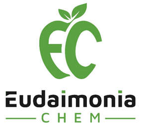

Trade Mark Journal No.2025/010 7 March 2025
UK00004152516 25 January 2025 (3)

- Class 3
- Non-medicated lotions; Balms (Non-medicated -); Non-medicated moisturisers; Salves [non-medicated]; Non-medicated creams; Non-medicated dentifrices; Non-medicated shampoos; Non-medicated mouthwashes; Non-medicated soaps; Non-medicated antiperspirants; Non-medicated toiletries; Non-medicated cosmetics; Non-medicated douches; Non-medicated toothpaste; Non-medicated oils; Non-medicated foot lotions; Babies' creams [non-medicated]; Foot balms (Non-medicated -); Skin balms (Non-medicated -); Non-medicated skin balms; Bath lotions (Non-medicated -); Non-medicated skin lotions; Non-medicated skincare preparations; Bath creams (Non-medicated -); Nutritional creams (Non-medicated -); Bath gels (Non-medicated -); Skin emollients [non-medicated]; Bath concentrates (Non-medicated -); Non-medicated cleansing creams; Non-medicated hair lotions; Non-medicated massage preparations; Non-medicated bath preparations; Bath preparations (Non-medicated -); Creams (Non-medicated -) for the body; Bath powders (Non-medicated -); Non-medicated toiletry preparations; Non-medicated toilet preparations; Non-medicated skin creams; Skin creams [non-medicated]; Lip balms [non-medicated]; Non-medicated lip balms; Non-medicated balm for hair; Skin cleansers [non-medicated]; Non-medicated pet shampoos; Nappy cream [non-medicated]; Creams (Non-medicated -) for the eyes; Non-medicated bath oils; Bath oils (Non-medicated -); Non-medicated foot cream; Skin cleaners [non-medicated]; Hand lotion (Non-medicated -); Skin tonics [non-medicated]; Non-medicated shower oils; Non-medicated toilet soaps; Scalp treatments (Non-medicated -); Lip coatings (Non-medicated -); Non-medicated skin serums; Non-medicated stimulating lotions for the skin; Cream cleaners (Non-medicated -); Baby care products (Non-medicated -); Non-medicated skin clarifying lotions; Bath foams (Non-medicated -); Foot care preparations (Non-medicated -); Lip balm [non-medicated]; Non-medicated beauty preparations; Bath pearls (Non-medicated -); Non-medicated lip care preparations; Body sprays [non-medicated]; Lip protectors (Non-medicated -); Hair tonic [non-medicated]; Hand oils (Non-medicated -); Foot powder [non-medicated]; Throat sprays [non-medicated]; Non-medicated hair shampoos; Non-medicated dental rinse; Non-medicated mouth sprays; Non-medicated skin care preparations; Body powder (Non-medicated -); Non-medicated body care preparations; Bath crystals (Non-medicated -); Non-medicated bath salts; Shampoos for animals [non-medicated grooming preparations]; Non-medicated scalp treatment cream; Face cream (Non-medicated -); Non-medicated face care preparations; Non-medicated cosmetics and toiletry preparations; Oral care preparations [non-medicated]; Face scrubs (Non-medicated -); Non-medicated bubble bath preparations; Non-medicated foot soaks; Skin care oils [non-medicated]; Eye care products, non-medicated; Face powder (Non-medicated -); Non-medicated sun care preparations; Non-medicated body soaks; Non-medicated mouth rinse; Skin cleansing cream [non-medicated]; Non-medicated diaper rash cream; Non-medicated mouth washes; Talcum powder (Non-medicated -) for babies; Bath and shower oils [non-medicated]; Shampoos for pets [non-medicated grooming preparations].
EUDAIMONIA CHEM LTD